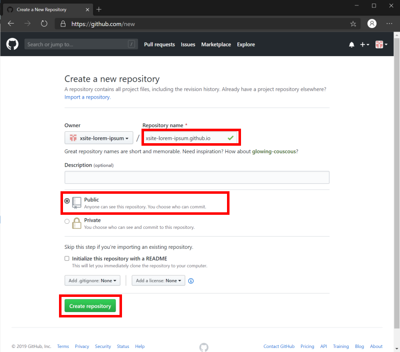
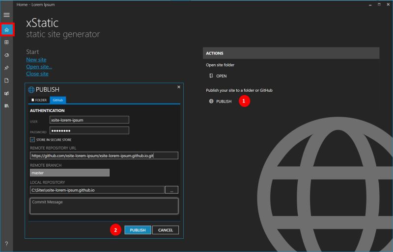

Publish the blog to GitHub Pages
October 29, 2019 by
Binny Kanjur
In this tutorial, we will publish our blog to GitHub Pages & make it publicly available on the internet.
GitHub Pages
is a free static site hosting service provide by
GitHub.
Prerequisites
GitHub Account.
Signup.
Create a User site
- Create a
new repository.
- Provide
username.github.io
in the Repository name field. Here,
username
is your GitHub username.
Make sure the first part of the repository name exactly matches your username.

Publish your blog
- On the
Home
screen, click
Publish.
- In the
Publish
dialog, select the
GitHub
tab & provide the required details.
- Provide your GitHub
username
&
password
in the
User
&
Password
fields.
- In the
Remote Repository
URL, provide
https://github.com/username/username.github.io.
Replace
username
with your GitHub username.
- Remote branch field defaults to
master.
- Local repository is used by Git to make changes locally on your computer. Provide
C:\Sites\username.github.io
in the
Local Repository
field.
- Click
Publish.

Open your browser & go to https://username.github.io.
Custom URLs
To change the blog’s URL from the default
username.github.io
to a custom domain, follow the
Configuring a custom domain for your GitHub Pages site
help.